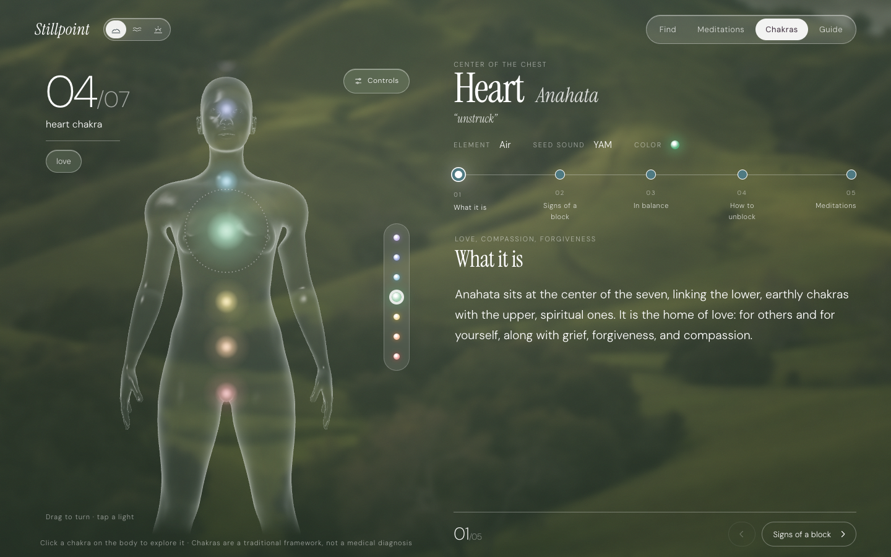

<!doctype html>
<html lang="en">
<head>
<meta charset="utf-8" />
<title>Stillpoint README images</title>
<link rel="stylesheet" href="../assets/fonts/fonts.css" />
<style>
  /* Compositions for the GitHub README. Render one at a time with ?v=hero|pages|body|phones */
  :root { --serif: "Instrument Serif", Georgia, serif; --sans: "DM Sans", system-ui, sans-serif; }
  html, body { margin: 0; }
  body { width: var(--w); height: var(--h); overflow: hidden; color: #fff; font-family: var(--sans); }

  .stage { position: relative; width: 100%; height: 100%; overflow: hidden; }
  /* one shared backdrop: the hills photo, blurred and washed in sage, with grain */
  .stage::before {
    content: ""; position: absolute; inset: -40px;
    background: url("../assets/bg-hills.jpg") center 60% / cover;
    filter: blur(28px) saturate(1.1) brightness(0.8);
  }
  .stage::after {
    content: ""; position: absolute; inset: 0;
    background:
      radial-gradient(ellipse at 20% 0%, rgba(214, 232, 208, 0.28), transparent 55%),
      linear-gradient(160deg, rgba(70, 104, 76, 0.55), rgba(26, 46, 32, 0.78));
  }
  .stage.water::before { background-image: url("../assets/bg-water.jpg"); background-position: center 55%; filter: blur(26px) saturate(1.05) brightness(0.85); }
  .stage.water::after {
    background:
      radial-gradient(ellipse at 20% 0%, rgba(220, 236, 240, 0.28), transparent 55%),
      linear-gradient(160deg, rgba(70, 104, 128, 0.5), rgba(18, 36, 50, 0.8));
  }
  .deskframe { position: absolute; border-radius: 16px; overflow: hidden; box-shadow: 0 40px 90px -30px rgba(3, 10, 18, 0.75), 0 0 0 1px rgba(255, 255, 255, 0.2); }
  .deskframe iframe { width: 1440px; height: 900px; border: 0; transform-origin: top left; display: block; }
  .pair .deskframe { left: 120px; top: 120px; width: 1250px; height: 781px; }
  .pair .deskframe iframe { transform: scale(0.868); }
  .pair .phone { left: 1440px; top: 150px; transform: scale(0.92); }
  .pair .cap { position: absolute; left: 122px; top: 940px; }
  .grain {
    position: absolute; inset: 0; z-index: 1; opacity: 0.18; mix-blend-mode: soft-light; pointer-events: none;
    background-image: url("data:image/svg+xml,%3Csvg xmlns='http://www.w3.org/2000/svg' width='220' height='220'%3E%3Cfilter id='n'%3E%3CfeTurbulence type='fractalNoise' baseFrequency='.85' numOctaves='3' stitchTiles='stitch'/%3E%3C/filter%3E%3Crect width='100%25' height='100%25' filter='url(%23n)'/%3E%3C/svg%3E");
  }
  .content { position: absolute; inset: 0; z-index: 2; }

  .shot {
    display: block; border-radius: 18px; overflow: hidden;
    box-shadow: 0 40px 90px -30px rgba(5, 15, 8, 0.75), 0 0 0 1px rgba(255, 255, 255, 0.18);
  }
  .shot img { display: block; width: 100%; }
  .phone {
    box-sizing: border-box;
    position: absolute; width: 390px; height: 844px; border-radius: 54px; padding: 12px;
    background: #10160f; box-shadow: 0 50px 100px -30px rgba(0, 0, 0, 0.8), 0 0 0 1.5px rgba(255, 255, 255, 0.22) inset;
    transform-origin: top left;
  }
  .phone iframe { width: 390px; height: 874px; border: 0; display: block; transform: scale(0.9385); transform-origin: top left; }
  .phone .screen { width: 366px; height: 820px; border-radius: 42px; overflow: hidden; }

  .eyebrow { font-size: 15px; letter-spacing: 0.22em; text-transform: uppercase; color: rgba(255, 255, 255, 0.62); }
  h1 { font-family: var(--serif); font-weight: 400; margin: 0; line-height: 0.95; }
  h1 em { font-style: italic; }
  .label { font-size: 15px; letter-spacing: 0.14em; text-transform: uppercase; color: rgba(255, 255, 255, 0.75); margin-top: 16px; }
  .label b { font-weight: 400; color: #fff; }

  /* ---- hero ---- */
  .hero .text { position: absolute; left: 110px; top: 150px; width: 520px; }
  .hero h1 { font-size: 132px; font-style: italic; }
  .hero p { font-size: 26px; line-height: 1.5; color: rgba(255, 255, 255, 0.82); margin: 26px 0 0; }
  .hero .pills { display: flex; gap: 12px; margin-top: 40px; flex-wrap: wrap; }
  .hero .pills span { border: 1.5px dotted rgba(255, 255, 255, 0.8); border-radius: 48% 52% 46% 54% / 56% 46% 54% 44%; padding: 12px 22px; font-size: 18px; }
  .hero .desk { position: absolute; left: 690px; top: 150px; width: 1080px; }
  .hero .phone { left: 1530px; top: 300px; transform: scale(0.76); }

  /* ---- pages grid ---- */
  .pages .grid { position: absolute; inset: 90px 100px 70px; display: grid; grid-template-columns: 1fr 1fr; gap: 56px 64px; }
  .pages .title { position: absolute; left: 100px; top: 34px; }

  /* ---- body feature ---- */
  .body .desk { position: absolute; left: 90px; top: 80px; width: 1180px; }
  .body .phone { left: 1390px; top: 80px; transform: scale(0.98); }
  .body .notes { position: absolute; left: 90px; top: 900px; display: flex; gap: 60px; }
  .body .notes div { max-width: 300px; font-size: 19px; line-height: 1.5; color: rgba(255, 255, 255, 0.82); }
  .body .notes b { display: block; font-family: var(--serif); font-weight: 400; font-size: 32px; color: #fff; margin-bottom: 6px; }

  /* ---- phones row ---- */
  .phones .row { position: absolute; left: 0; right: 0; top: 70px; display: flex; justify-content: center; gap: 70px; }
  .phones .phone { position: relative; }
  .phones .cap { text-align: center; }
</style>
</head>
<body>
<div class="stage"><div class="grain"></div><div class="content" id="c"></div></div>
<script>
  const params = new URLSearchParams(location.search);
  const v = params.get("v") || "hero";
  const bg = params.get("bg");
  // show the site's water scene inside every frame
  if (bg) { try { localStorage.setItem("stillpoint-scene", bg); localStorage.setItem("stillpoint-controls", "0"); } catch {} }
  const app = "../index.html";
  const phone = (hash, style = "") => `<div class="phone" style="${style}"><div class="screen"><iframe src="${app}${hash}" scrolling="no"></iframe></div></div>`;
  const sizes = { pair: [1920, 1080], hero: [1880, 1000], pages: [1880, 1240], body: [1880, 1180], phones: [1880, 1080] };
  const [w, h] = sizes[v];
  document.body.style.setProperty("--w", w + "px");
  document.body.style.setProperty("--h", h + "px");
  const c = document.getElementById("c");
  document.querySelector(".stage").classList.add(v);
  if (bg) document.querySelector(".stage").classList.add(bg);
  // finish every fade-in instantly inside the frames so captures are never mid-animation
  const settle = (f) => { try { const st = f.contentDocument.createElement("style"); st.textContent = "*,*::before,*::after{animation-delay:0s!important;animation-duration:.001s!important;transition:none!important}"; f.contentDocument.head.append(st); } catch {} };
  new MutationObserver(() => document.querySelectorAll("iframe").forEach((f) => { if (!f.dataset.s) { f.dataset.s = 1; f.addEventListener("load", () => settle(f)); } })).observe(document.body, { childList: true, subtree: true });
  const desk = (hash) => `<div class="deskframe"><iframe src="${app}${hash}" scrolling="no"></iframe></div>`;

  if (v === "pair") c.innerHTML = `
    ${desk(params.get("d"))}
    ${phone(params.get("p"))}
    <div class="label cap"><b>${params.get("t") || ""}</b></div>`;

  if (v === "hero") c.innerHTML = `
    <div class="text">
      <div class="eyebrow">Meditation &amp; chakras</div>
      <h1>Stillpoint</h1>
      <p>Describe what you're carrying. Find a meditation, and see where it may be sitting in your body.</p>
      <div class="pills"><span>3D glass body</span><span>14 practices</span><span>4-week guide</span></div>
    </div>
    <div class="shot desk"></div>
    ${phone("#/")}`;

  if (v === "pages") c.innerHTML = `
    <div class="grid">
      ${[["find", "01", "Find", "describe a feeling"], ["library", "02", "Meditations", "fourteen practices"], ["meditation", "03", "A practice", "history, uses, steps, videos"], ["guide", "04", "Guide", "a four-week plan"]]
        .map(([img, n, name, sub]) => `<figure style="margin:0"><div class="shot"></div><div class="label">${n} &nbsp; <b>${name}</b> &nbsp;·&nbsp; ${sub}</div></figure>`).join("")}
    </div>`;

  if (v === "body") c.innerHTML = `
    <div class="shot desk"></div>
    ${phone("#/chakras/throat")}
    <div class="notes">
      <div><b>Glass, not skin</b>A Fresnel shader lights only the edges, drawn in two passes so arms and torso read as one clean shell.</div>
      <div><b>Breathing lights</b>Seven chakras pulse softly along the spine, and the camera glides to whichever one you open.</div>
      <div><b>Yours to turn</b>Drag, pinch, scroll or tap. On phones, vertical swipes still scroll the page.</div>
    </div>`;

  if (v === "phones" && bg) document.body.style.setProperty("--h", "1080px"), document.body.style.setProperty("--w", "1920px");
  if (v === "phones") c.innerHTML = `
    <div class="row">
      ${[["#/", "Find"], ["#/chakras/heart", "Chakras"], ["#/guide/beginner", "Guide"]]
        .map(([hash, cap]) => `<div>${phone(hash, "transform:scale(1)")}<div class="label cap"><b>${cap}</b></div></div>`).join("")}
    </div>`;
</script>
</body>
</html>
